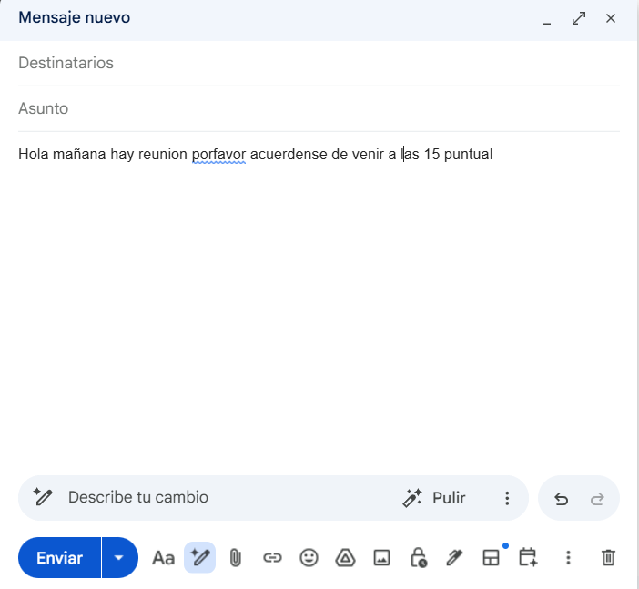
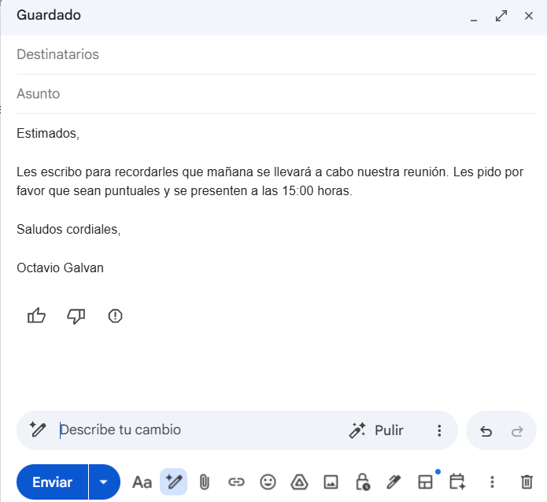

Inteligencia Artificial: Desarrollar una mentalidad de crecimiento
Explorando el ecosistema, los desafíos organizacionales, la regulación y el impacto práctico de la tecnología que está redefiniendo el futuro profesional.
Octavio Galván
Apertura de la Charla:
- Preséntate como Octavio Galván. Menciona tu perfil dual: abogado de formación pero apasionado por la tecnología y la IA.
- Explica que esta presentación no es un PowerPoint estático, sino una herramienta web interactiva, demostrando el mindset tecnológico en acción.
- Da crédito a Fredi Vivas (CEO RockingData) por proveer las bases y slides estructurales que utilizas para esta sesión.
- Plantea el objetivo: entender que la IA es una herramienta de productividad ("el nuevo Excel") y cómo gobernarla de forma segura en lugar de prohibirla.
Ecosistema de la IA Generativa
Modelos Fundacionales
Selecciona un nivel de la pirámide para explorar el ecosistema.
Ejemplos Clave:Concepto de Ecosistema:
- Usa la pirámide interactiva para explicar que la IA no es un monolito (e.g. ChatGPT no es toda la IA).
- Nivel 1 (Base): Explica los LLMs entrenados con supercomputadoras (GPT-4, Claude, Llama). Es infraestructura cruda.
- Nivel 2: Programadores que usan APIs para conectar modelos con datos (LangChain, bases vectoriales).
- Nivel 3: Portales de consumo masivo como ChatGPT o Gemini conversacionales.
- Nivel 4: Aplicaciones de nicho que resuelven una cosa muy bien (diseño con Midjourney, video con Synthesia).
- Nivel 5 (Cúspide): Herramientas corporativas tradicionales que embeben IA (Copilot en Excel/Word, Photoshop con Firefly).
La IA como Concepto Paraguas
IA Generativa
Haz clic en los diferentes círculos concéntricos para entender la jerarquía tecnológica.
FuenteDiferenciación de Términos (Fundamental para una audiencia corporativa/no-técnica):
- Explica la relación de inclusión matemática entre los términos:
- IA es la categoría general de máquinas emulando inteligencia humana (nace en 1956).
- Machine Learning es una rama de la IA basada en aprender de datos (en lugar de programarle reglas fijas). Nace en los 50-60s.
- Deep Learning son redes neuronales complejas para procesar cosas difíciles (imágenes, audios). Toma fuerza en 2012.
- GenAI es solo la subdisciplina más reciente de Deep Learning enfocada en CREAR datos nuevos basados en probabilidades.
Redes Neuronales: No es magia, son números y conexiones
¿Cómo funciona una Red Neuronal?
Inspiradas en las neuronas de nuestro cerebro, las redes neuronales artificiales son capas de nodos interconectados. Cada conexión tiene un "peso" (un número decimal) que determina la fuerza de la señal que pasa a través de ella.
La red no posee intuición ni comprensión biológica; simplemente procesa entradas, aplica multiplicaciones por los pesos, suma todos los resultados en una neurona y decide el output. Entrenar una IA es ajustar matemáticamente esos pesos hasta obtener la predicción correcta.
Explicación del Ejemplo Interactivo
Diseñamos una red simple de clasificación de frutas con dos variables de entrada y dos opciones de salida:
- Entradas (x1 y x2): Toman el valor 1 si la fruta tiene esa propiedad física, y 0 si no.
- Pesos (w): Los números en las líneas. La salida de Manzana prioriza el color Rojo (w1 = +0.9) y penaliza la forma Alargada (w2 = -0.4). La de Banana penaliza el Rojo (w3 = -0.5) y premia la forma Alargada (w4 = +0.95).
- Suma (Σ) y Decisión (y): La neurona de salida calcula la ecuación y activa la opción con el resultado final más alto.
La Matemática detrás
Conclusión: Al cambiar los valores de entrada, la red neuronal simplemente efectúa multiplicaciones y sumas. Si el resultado es positivo y alto, activa la salida correspondiente. ¡Es puro cálculo probabilístico!
Explicando redes neuronales de forma simple:
- Usa este simulador interactivo para disipar el aura "mágica" de la IA.
- Explica: "Cuando ven a ChatGPT responder, o a una IA reconocer una foto, no hay un duende pensando. Hay una gigantesca red de estas ecuaciones lineales".
- Muestra cómo al cambiar a "Banana Amarillo y Alargado", las variables cambian, las multiplicaciones de pesos cambian, y el resultado matemático activa la otra salida.
- Menciona: "Aprender" o "entrenar" la IA es simplemente ajustar esos pesos decimales (los multiplicadores) mediante millones de ejemplos hasta que den las sumas correctas.
No hay IA sin M.A.D.
MAD: Machine Learning + AI + Data
Los tres pilares esenciales de los sistemas de decisión modernos. Haz clic sobre cada elemento para ver la explicación.
Mensaje Clave de Datos y Leyes:
- "No hay IA sin Datos". La IA no crea conocimientos mágicamente; procesa históricos.
- D (Data): La base. Si los datos están sucios, sesgados o desorganizados, cualquier IA generará resultados erróneos ("Garbage in, garbage out").
- M (Machine Learning): El cerebro estadístico que predice.
- A (AI): La interfaz de acción automatizada.
- *Vínculo Legal/Abogado: Desconectamos del "sólo códigos" y entramos a regulaciones en datos personales.
Analytics tradicional vs Machine Learning
Enfoque Analítico
Analiza datos históricos para diagnosticar qué ocurrió y por qué ocurrió en el pasado.
- Reactivo (mira hacia atrás)
- Requiere un humano que tome la acción
- Reportes estáticos, cuadros e historiales
Enfoque Predictivo (ML)
Utiliza algoritmos matemáticos para predecir qué pasará en el futuro y sugerir u optimizar decisiones de forma autónoma.
- Proactivo (mira hacia adelante)
- Puede automatizar la toma de decisiones
- Modelado dinámico y probabilístico
Mueve el interruptor para ver un ejemplo de fuga de clientes.
El salto del Diagnóstico a la Predicción:
- Usa el switch interactivo para ilustrar el cambio de mentalidad.
- Analytics tradicional responde: ¿Qué pasó? y ¿Por qué ocurrió? (Históricos).
- Machine Learning responde: ¿Qué pasará? y ¿Qué acción tomar? (Futuro y Prescripción).
- Ejemplo Práctico de Clientes: Muestra cómo cambia la respuesta de recibir un reporte mensual tarde frente a predecir la caída de un cliente en tiempo real y dispararle una oferta de retención.
Línea de Tiempo: Hitos de la IA
1956 - Dartmouth
John McCarthy, Marvin Minsky y Claude Shannon proponen el término "Artificial Intelligence" en un workshop de verano.
Destruir mitos históricos:
- Involucra a la audiencia haciendo la pregunta interactiva del Quiz.
- Muestra que la IA NO nació en 2022 con ChatGPT. Tiene **70 años de historia**.
- 1956: Conferencia de Dartmouth. El nacimiento formal del término "Artificial Intelligence" por John McCarthy y Claude Shannon.
- Habla del "invierno de la IA" y de cómo la potencia de cómputo actual (GPU) y la masividad de internet permitieron el boom de 2012 y 2022.
La Revolución en Cifras: 3 Años de Impacto
Usuarios Activos en ChatGPT
La adopción masiva más veloz registrada por un servicio digital. Superó los 100M de usuarios en solo 2 meses; hoy supera los 400 millones mensuales.
Fuente: OpenAI — Feb 2025Shadow AI en Empresas
Empleados que utilizan herramientas de IA generativa de manera informal y sin autorización explícita de su compañía.
Fuente: McKinsey Global SurveyInversión Proyectada
Capital volcado globalmente a la infraestructura de modelos fundacionales y chips específicos para IA.
Fuente: Gartner IT Spending ForecastMagnitud del Fenómeno:
- Al entrar en esta diapositiva, los números suben automáticamente de forma dinámica.
- 180M de usuarios: Supera la velocidad de adopción de la telefonía móvil, la TV o el internet móvil.
- $210B: Inversión gigantesca que demuestra que la IA no es una moda transitoria, sino un cambio de infraestructura estructural.
- 50% de Shadow AI: ¡Este es el gancho! Introduce que la mitad de los empleados que te escuchan probablemente usan IA sin decírselo al jefe. Esto nos lleva al siguiente slide.
El Elefante en la Sala: Shadow AI
¿Qué es Shadow AI?
Ocurre cuando los colaboradores adoptan asistentes de IA públicos de forma oculta en sus flujos diarios. Buscan productividad, pero generan vulnerabilidad corporativa.
El estrés directivo y Shadow AI:
- Al entrar en la slide, se simula un chat en tiempo real con posiciones contradictorias de directores. Genera identificación y humor en la audiencia.
- Explica la tensión: El CEO quiere seguridad; el empleado quiere optimizar tiempo; el área comercial presiona por resultados.
- Define **Shadow AI**: los empleados usan las herramientas por sí mismos si la empresa no les da una vía oficial o segura.
- Menciona que la prohibición total es una ilusión; solo empuja la adopción a la clandestinidad y aumenta los riesgos legales.
Filtración de Datos: Caso Samsung
Haz clic en cada incidente para ver el análisis de riesgo legal correspondiente.
El rol de Abogado y los Secretos Comerciales:
- Caso Samsung (Mayo 2023): Oro para la perspectiva legal de tu charla.
- Explica los 3 incidentes que ocurrieron en la división de semiconductores.
- Detalla el problema con los términos de servicio (ToS) públicos de herramientas gratuitas de OpenAI/Google: lo que se sube pasa a guardarse en sus servidores y puede usarse para entrenar futuros modelos.
- Impacto legal: Pérdida de confidencialidad y del estatus de 'secreto industrial o comercial', lo cual requiere por ley mantener medidas de custodia razonables.
JP Morgan: De Prohibir a Gobernar
Febrero 2023: Bloqueo Total
Haz clic en los hitos del cronograma para ver la evolución estratégica de JP Morgan.
El camino correcto: Gobernanza activa:
- Muestra el contraste: En febrero 2023 JP Morgan prohibió totalmente la IA (como todas las firmas reguladas de Wall Street).
- Pero entendieron que no podían ignorar el aumento de productividad.
- Solución (LLM Suite): Crearon una interfaz interna y segura. Los datos viajan cifrados por API directa con contratos especiales que prohíben explícitamente a OpenAI entrenar con sus datos.
- Resultado: De prohibición total a un entorno controlado con miles de usuarios activos creando resúmenes e informes financieros.
Tres Políticas ante la Adopción de IA
1. No Hacer Nada
Se tolera o ignora el uso. Cada empleado decide qué subir y qué herramienta emplear. (Laissez-faire)
Clic para ver análisis2. Modelo Híbrido
Gobernanza activa. Se otorgan herramientas internas protegidas por API y políticas de uso claro (ej. LLM Suite de JPM).
Clic para ver análisis3. Restringir Todo
Bloqueo a nivel red corporativa de todas las direcciones de proveedores de IA externos.
Clic para ver análisisMatriz de decisión para el liderazgo:
- Haz clic en cada tarjeta para girarla (efecto 3D) y mostrar los Pros y Contras.
- No hacer nada: Peligro total. Es negligencia en la custodia de datos de clientes.
- Bloqueo total: Causa frustración. Los competidores que usan IA ganarán velocidad operativa.
- Modelo Híbrido: La gobernanza inteligente. Firma NDAs, usa APIs seguras y enseña a tu personal qué datos PUEDEN y cuáles NO pueden subir a la IA.
Regulación Global: La Ley Europea de IA
Riesgo Inaceptable
Totalmente ProhibidoRiesgo Alto
Estrictamente ReguladoRiesgo Limitado
Obligación de TransparenciaRiesgo Mínimo
Sin Obligaciones LegalesRiesgo Alto (Estrictamente Regulado)
Sistemas que afectan directamente derechos fundamentales o áreas críticas. Exigen auditorías, registros y supervisión humana.
Ejemplos y Casos:El marco regulatorio de referencia:
- Como abogado, destaca la importancia de la **Ley Europea de IA (IA Act)**, la primera ley integral sobre IA del mundo.
- Explica el enfoque basado en riesgos: a mayor probabilidad de daño a los ciudadanos, mayores exigencias legales.
- Prohibido (Inaceptable): Sistemas que violan derechos humanos básicos (ej. social scoring o manipulación).
- Riesgo Alto: Detección de CVs, evaluación crediticia, infraestructuras. Exige cumplimiento preventivo riguroso.
- Riesgo Limitado: Chatbots generales. Exige avisar que estás chateando con una IA para evitar el engaño.
Casos de Éxito en el Mundo Real
Demostración de Impacto en Negocio:
- Haz clic en los filtros interactivos para mostrar la versatilidad de la IA en distintas áreas corporativas.
- Walmart (Buscador): Transición hacia búsquedas conversacionales complejas.
- AB InBev (NLP BEES): Uso de agentes inteligentes integrados a facturación para subir 40% el CSAT.
- Amazon: El 35% de sus ingresos provienen de algoritmos predictivos automáticos.
- Seguros (Fraude): Aceleró la revisión de siniestros un 70%.
Mentalidad de Crecimiento: El Nuevo Excel
"La IA Generativa es el nuevo Excel"
En los años 80, muchos contadores temían que las hojas de cálculo los dejaran sin empleo. Quienes se resistieron, quedaron obsoletos; quienes lo adoptaron, multiplicaron su capacidad de análisis. La IA generativa es una herramienta de productividad horizontal similar.
Cierre Inspirador de la Charla:
- Cierra con la analogía del Excel. Plantea la IA no como una amenaza que te sustituye, sino como una herramienta horizontal que debes dominar.
- Explica la mentalidad de crecimiento (Carol Dweck): el cambio de ver la IA como un rival frente a verla como un copiloto o potenciador de capacidades.
- Como abogado, puedes reflexionar: "Los contratos no se escribirán solos de la nada, pero un abogado que audita un borrador asistido por IA tardará la mitad del tiempo y podrá enfocarse en la estrategia del cliente".
- Termina con la frase clave: **"La IA no va a reemplazar a los profesionales..."**
IA Aplicada a la Práctica Jurídica
Uso integral y seguro de Google Gemini, Custom GEMS y NotebookLM adaptado para abogados y procuradores de la Caja de Salta.
Objetivo del Módulo:
- Dominar la infraestructura conceptual (Tokens y Ventana de Memoria de Trabajo).
- Procesar pruebas escaneadas, expedientes y actas judiciales vía visión artificial (Multimodalidad).
- Crear asistentes personalizados (Gems) y carpetas de investigación digital con control de alucinaciones (NotebookLM - RAG).
Introducción a la Parte Práctica:
- Transición: Después del marco teórico, entramos a la implementación real en el día a día del abogado.
- Este módulo prático se basa en la "Guía Estructurada de Capacitación Jurídica" diseñada para la Caja de Salta.
- Haremos foco en tres tecnologías de Google: Gemini (Asistente general), Gems (Asistentes con System Prompts estructurados) y NotebookLM (La carpeta de caso con RAG).
Tokens: La Memoria de Trabajo
Los modelos de IA no leen palabras completas como los humanos. Dividen el texto en tokens (1 token ≈ 3/4 de palabra en español). La cantidad de tokens que una IA puede retener simultáneamente se denomina Ventana de Contexto.
Aislamiento de Casos
Regla de Oro Legal: Para evitar la contaminación cruzada de datos confidenciales y mantener la coherencia del chat, siempre inicia un "Nuevo Chat" al cambiar de expediente o cliente.
¿Qué diferencia a los Modelos?
La diferencia clave entre los diferentes modelos no es solo su tamaño, sino el límite de su ventana de contexto (los tokens que caben en memoria) y la calidad de sus pesos internos (el conocimiento adquirido durante el entrenamiento).
Tokens y Memoria de Trabajo:
- Explica el concepto de tokens de manera analógica: "Es el límite de memoria a corto plazo de la IA".
- Utiliza el calculador para mostrar que, mientras un escrito judicial común son pocos tokens, un expediente entero de 100 páginas (50.000 tokens) ya supera el límite de memoria de muchos modelos antiguos.
- Resalta la ventaja de Gemini 3.5 Pro: su ventana de 2 millones de tokens permite subir tomos completos de expedientes sin perder el hilo de la conversación.
- Enfatiza el **Aislamiento de Casos**: la IA recuerda lo anterior. Si mezclas dos juicios de clientes distintos en el mismo chat, la IA podría confundir hechos o jurisprudencia (contaminación cruzada).
Multimodalidad: Procesamiento de Cédulas
Google Gemini permite procesar imágenes, audios y PDFs escaneados directamente. Esto es crucial en el ámbito legal para digitalizar y extraer datos clave de cédulas manuscritas, fotos de actas de inspección o expedientes antiguos.
CÉDULA DE NOTIFICACIÓN JURÍDICA
AUTOS: "GÓMEZ MARTÍN c/ CAJA DE SEGURIDAD SOCIAL s/ AMPARO" - Expte N° 84.712/2026
DESTINATARIO: Asesoría Legal - Caja de Seguridad Social de Salta
DOMICILIO: Av. Sarmiento N° 302 - Salta
Hágase saber a Ud. que en el expediente caratulado arriba indicado, el Juez de Primera Instancia Civil y Comercial de 4ta Nominación ha dictado la resolución que en su parte pertinente dice: "...Salta, 10 de Agosto de 2026. Téngase por presentado el recurso de amparo. Traslado a la demandada por el plazo perentorio de cinco (5) días bajo apercibimiento de ley. Notifíquese... Fdo: Dr. Roberto Ruiz (Juez)".
Recibido el: 13/08/2026 a las 09:30 hs. Cargo N° 451.
| Campo Extraído | Valor Detectado por Gemini |
|---|---|
| Autos / Carátula | Gómez Martín c/ Caja de Seguridad Social s/ Amparo |
| Expediente N° | 84.712/2026 (Juzgado Civil y Comercial 4ta Nom.) |
| Fecha de Cargo | 13 de Agosto de 2026 (09:30 hs) |
| Plazo Procesal | Cinco (5) días hábiles judiciales |
| Apercibimiento | Bajo apercibimiento de resolverse de ley |
Uso de Multimodalidad en Cédulas:
- Muestra el simulador: al presionar el botón morado de ejecutar prompt, se extraen instantáneamente los datos de la cédula en una tabla limpia.
- Explica cómo esta funcionalidad ahorra horas de transcripción manual a los procuradores o administrativos de un estudio jurídico o institución.
- Destaca que la multimodalidad permite a la IA "ver" la foto tomada con el celular y transcribir el manuscrito de las firmas o fechas de cargo.
Gems: Asistentes Jurídicos Personalizados
Una Gem es una versión de Gemini programada con un rol, instrucciones y pautas de redacción estrictas (System Prompt). Funciona como un Manual de Procedimiento para resolver tareas repetitivas en el estudio.
Acceder a Gemini GemsSystem Prompt Completo (Instrucciones de la Gem)
Demostración de Resolución (Antes / Después):
Configuración de GEMS Personalizadas:
- Muestra cómo funciona una Gem a través de los tres ejemplos del PDF.
- Enfatiza que el System Prompt actúa como las "reglas permanentes" de la IA: no tienes que volver a programarla cada vez que inicias sesión.
- Lee o describe el System Prompt del **Redactor de Cartas Documento e Intimaciones** (procedimientos argentinos, delimitación por corchetes `[]` para variables y cita normativa obligatoria).
- Muestra el **Simplificador de Lenguaje**: traduce un dictamen técnico incomprensible a viñetas comprensibles para un afiliado de la Caja de Seguridad Social.
NotebookLM: La Carpeta del Caso
NotebookLM utiliza una arquitectura **RAG** (Generación Aumentada por Recuperación) que obliga al modelo a responder únicamente con base en los documentos proporcionados por ti, eliminando las alucinaciones normativas o inventos de fallos.
Acceder a NotebookLMNotebookLM y RAG:
- Explica cómo NotebookLM revoluciona la preparación de un caso: "Es una carpeta digital de expedientes inteligentes".
- Resalta la diferencia fundamental de **RAG**: No alucina. Si le preguntas algo que no está en las tres fuentes de la izquierda, te dirá: "No se encuentra en los documentos proporcionados".
- Muestra el simulador de citas: al hacer clic en las consultas, las respuestas incluyen pequeñas burbujas con números `[1]`, `[2]`. Al pasar el mouse por encima, se ilumina de forma interactiva la fuente exacta en la carpeta de la izquierda, validando el control del abogado.
Redacción de Mails: IA Integrada en Gmail
Google Workspace integra a Gemini de forma nativa en Gmail mediante la función de Redacción Asistida ("Ayúdame a escribir"). Permite transformar un borrador informal de pocas palabras en un correo institucional formal y pulido en segundos.

Antes de la IA
Pulido con Workspace IARedactor de Mails con IA en Gmail:
- Muestra el flujo directo de trabajo usando la IA integrada de Gmail en Workspace ("Ayúdame a escribir" / "Pulir borrador").
- Borrador Inicial: Un mensaje corto, informal o redactado con prisa que carece de formalidad profesional.
- Correo Pulido con IA: Workspace reescribe el borrador manteniendo la intención original pero adaptándolo al protocolo de comunicación institucional de la Caja de Salta.
- Destaca que esto reduce el tiempo de redacción de mails complejos a menos de la mitad y previene errores ortográficos o de tono.
Síntesis y Principio Ético
Para resumir el módulo práctico, revisemos la matriz de trabajo que define cuándo utilizar cada herramienta y el principio rector obligatorio en el ejercicio profesional de la ley.
| Criterio de Elección | Google Gems (Gemini) | Cuadernos (NotebookLM) |
|---|---|---|
| Enfoque Primario | Definir el CÓMO (Métodos de trabajo, estilo, tono y directivas). | Definir el QUÉ (Un expediente judicial específico o causa). |
| Fuentes de Información | Prompts del abogado + contexto general + extensiones de Workspace. | Carga masiva directa de hasta 600 documentos (PDFs, audios, actas). |
| Control de Alucinación | Depende del correcto diseño de instrucciones del prompt. | Estricto (RAG): Responde exclusivamente sobre las fuentes cargadas. |
| Analogía Jurídica | El Manual de Procedimientos o la especialización del abogado. | La Carpeta Física o expediente digital del caso. |
Principio Ético Institucional: Human-in-the-Loop (El Humano en el Bucle)
La Inteligencia Artificial opera únicamente como un copiloto de eficiencia y análisis de datos. La responsabilidad profesional, el criterio normativo y la validación final del escrito recaen de forma indelegable en el abogado o profesional matriculado. Ningún borrador generado por IA debe presentarse ante estrados sin revisión rigurosa previa.
Cierre Ético y Profesional:
- Explica la matriz comparativa: Gems = El método / NotebookLM = El expediente específico.
- Cierra con fuerza la presentación apelando al rol de Abogado.
- Menciona el principio **Human-in-the-Loop**: La IA propone, el abogado matriculado audita y firma.
- El criterio normativo no es matemático; exige ponderación de valores humanos, estrategia judicial y ética que las máquinas no poseen.